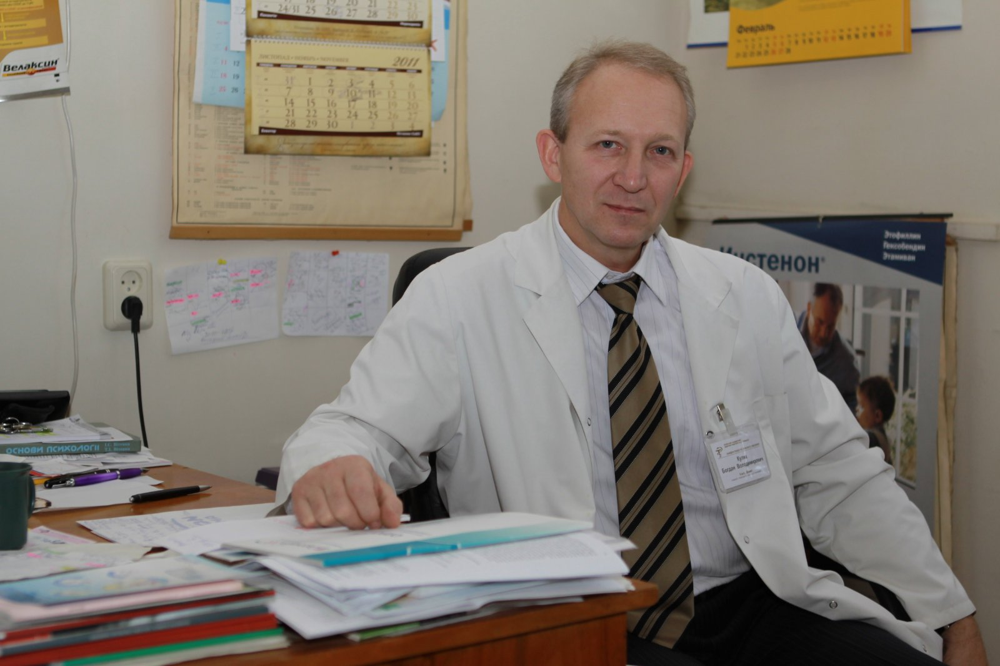
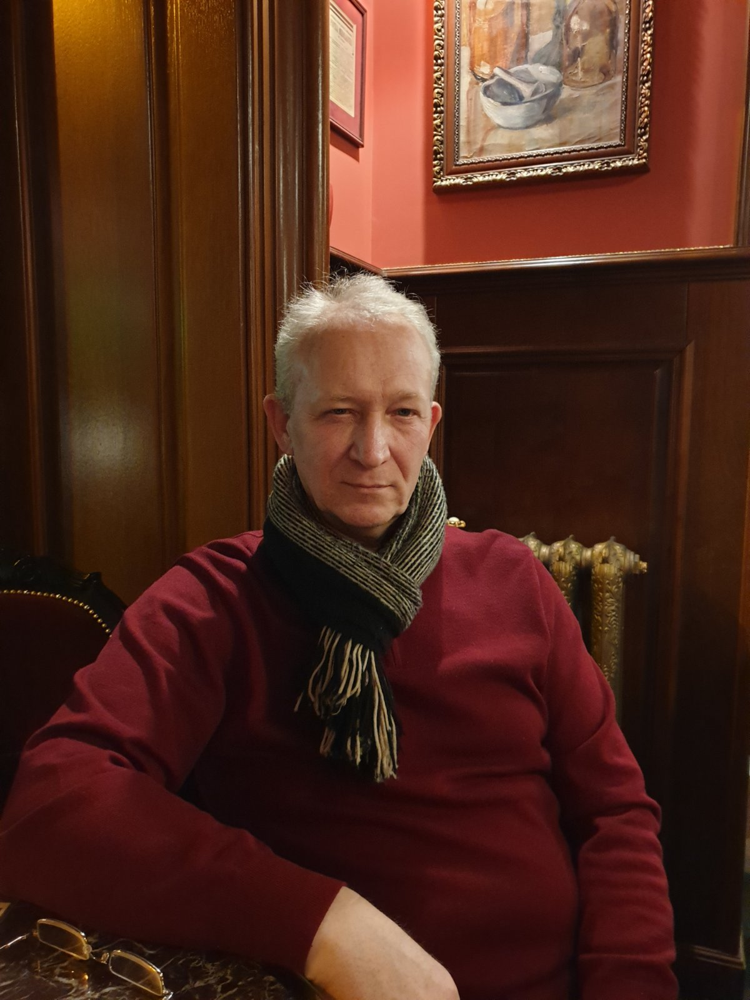
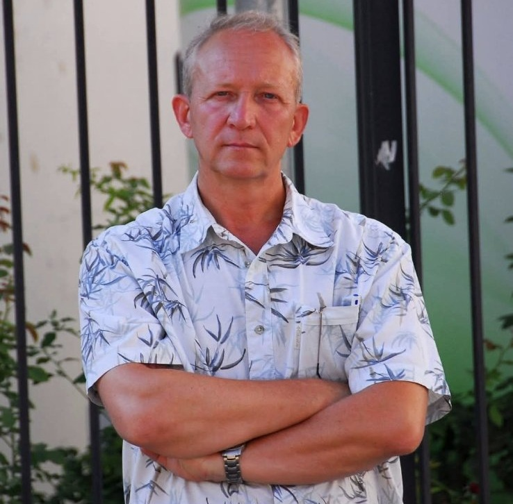

Богдан Володимирович Кулик — кандидат медичних наук, психіатр, психотерапевт, фахівець з акупунктури. Професійна діяльність поєднує клінічну практику, наукову роботу, участь у професійних конференціях та фахові медіаінтерв’ю.
Основні напрями професійного інтересу: психіатрія, психотерапія, психофармакотерапія, акупунктура, тривожні та невротичні розлади, психоемоційні стани, психосоціальна реабілітація.
Богдан Володимирович Кулик працює у сфері психіатрії, психотерапії та суміжних клінічних напрямів. У науковій та професійній діяльності увага приділяється проблематиці невротичних і тривожно-депресивних розладів, психофармакотерапії, психосоціальної реабілітації, а також міждисциплінарним підходам у психічному здоров’ї.
Сторінка має інформаційний характер і призначена для узагальненого представлення професійного профілю, публікацій, участі в конференціях, медіаматеріалів та контактної інформації.
Психіатрія, психотерапія, акупунктура.
Українська, польська, англійська.
Психофармакотерапія, психоемоційні стани, психосоціальна реабілітація, neuroscience-підхід у психіатрії.
Наукові публікації, участь у конференціях та фахові медіаматеріали.
У професійному профілі поєднуються клінічна психіатрія, психотерапія, психофармакотерапія та інтерес до сучасного розуміння роботи нервової системи. Такий підхід є важливим для вивчення тривожних і невротичних станів, порушень сну, психоемоційного виснаження, психосоматичних проявів та реабілітаційних стратегій у психіатрії.
Інтерес до сучасних уявлень про роботу мозку, нервової системи та емоційної регуляції.
Аналіз можливостей медикаментозної корекції психічних і психоемоційних розладів.
Інтеграція психотерапевтичних і реабілітаційних підходів у клінічній практиці.
Нижче подано кілька вибраних публікацій, пов’язаних із невротичними розладами, психофармакотерапією, психоемоційними станами та психіатричною реабілітацією.
Професійний розвиток включає участь у міжнародних освітніх програмах і сертифікаційних заходах у сфері психіатрії та психотерапії.
July 16–21, 1995.
Психіатрія, психотерапія, професійний обмін досвідом.
Клінічна психіатрія, психофармакотерапія, психотерапевтичні підходи.
Професійні дискусії щодо психічного здоров’я та сучасної психіатрії.
Тут можна розмістити точний хронологічний список участей у конференціях.

Нижче зібрано окремі інтерв’ю та газетні матеріали, у яких Богдан Володимирович Кулик виступає як фаховий коментатор з питань психіатрії, психічного здоров’я, тривоги, стресу та психоемоційних станів.
KP.UA, 28 травня 2023 року.
Rozmova, 20 лютого 2021 року.
Високий Замок, 19 серпня 2020 року.
Уважний, інтелігентний і дуже спокійний підхід. Консультація пройшла в атмосфері довіри, без тиску та поспіху.
Лікар уважно вислухав, пояснив стан зрозумілою мовою та допоміг краще зорієнтуватися у подальших кроках.
Відчувається поєднання професійного досвіду, наукового мислення і людяного ставлення до пацієнта.
Для зв’язку та уточнення інформації можна користуватися вказаним номером телефону.
